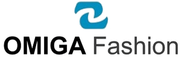

Sampling
- Collect the buyer's fabric and style requirement.
- Identify and select the right source.
- Screen the first make with inspection and testing.
- Send samples out and bring the comments back to the factory.

Start a programmeThe service
Sampling, price, the critical path, inspection, and the vessel. These are the activities the desk actually runs for a buyer.
Once the order is confirmed, the desk sits with the supplier on process planning and builds a critical path around the stages that can slip.
Merchandising, quality control, and logistics meet every Saturday. Status is mailed to the customer every Monday, so every live order has a written position.
Prototype, salesman, pre-production, and photo samples are tracked as separate steps, not bundled into one "sample sent" line.
The vessel is arranged with the forwarder, and the connection points are followed so the cargo does not miss the mother vessel.
Precision from the first block to the bulk marker.
Fit comments translated into a spec the sewing line can use.
A curated range when the buyer wants a collection, not one body.
Partner plants held to WRAP, BSCI, Sedex, Accord, RSC, and ISO expectations.